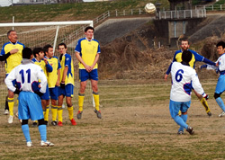
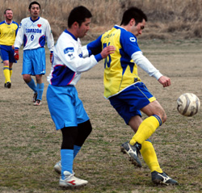
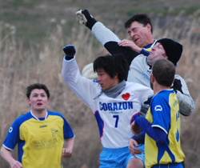
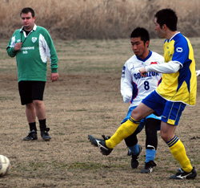
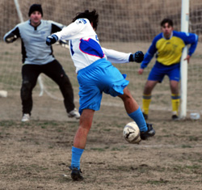

|
Misato, Sunday 20th January,
After a pretty strong season by Clash standards in 2006/2007 things this season have not been so good. Ok, we have been spanked more times than a cute high school girl has been by an ero-oyaji with cash to burn. A change of formations though has brought a bit more cohesion to the team and that paid dividends against KGFC on the 20th January with a 3-0 victory.
After a gentle warm up and some stretches it was time to have a bit of a chat about the day's formation, tactics and attitude. Andy Walsh, Andy Drought and Sam were to be the midfield triumvirate, Ian, Pete and Nick the defensive terrific trio, Yasu and I to tear up and down the wings (he slightly more quickly than I admittedly) and Sid and Mads to terrorise the KGFC defenders.
The call was for more vocal support and encouragement and it seemed to work during the match. Except that is for Mads giving himself a stern telling off at one point after a poor touch, kicking up some extra and un-desired dust and giving away a freekick as the referee thought he was shouting and swinging at the defender all while the ball that he had just lost dribbled past him again a mere yard away. He narrowly avoided what could well have been one of the most ridiculous bookings ever.
The first half of the game saw some incisive passing from KGFC that led to some fine wing play but found the middle sorely lacking in strikers. Pete, Ian and Nick marshalled by Rob Keeper-Manager held strong at the back but the midfield was struggling a little to position and assert itself while the forwards were not hanging onto the ball on the occasions it got to them. At halftime KGFC had missed some good chances but as the half had gone on Clash had started to find some shape in midfield and had seen a couple of chances spurned too.

The Clash halftime talk was a bit negative all thing considered. Mr Keeper-Manager did manage a few positive words at the end though and most players were relieved and quite inspired by having reached half-time without conceding for the first time this season if I recall correctly.
The second half started with the Clash doing pretty much the same and KGFC playing some pretty stuff again without getting anything from it. Mads and Sid were tiring and nothing really seemed to be going for them despite a bit of service for once. The team changed around a bit and suddenly Clash had scored out of nowhere. A speculative cross met Yasu's trusty left foot and languidly looped over a stranded keeper. A goal after quite a few playing hours had come and the Clash players were even more relieved. Some of them even smiled and the more modern and liberated among them shouted a quick 'Hurrah!' and perhaps even a 'Huzzah!' was heard but maybe I over-exaggerated the moment in my excited mind.

KGFC kept coming but our midfield was battling hard and helping the defence where Rob may not have been kicking so well but he was pulling off some decent saves and Pete, Ian and Nick were still battling bravely and purposefully. It was round about this time too that the KGFC keeper started going walkabout maybe as he tried to play sweeper to his defenders who were pushing forwards. Out of position he was a-wondering when the ball broke to Go who despite being a skillful player sometimes panics a little in possession or under pressure. Not this time though as he beautifully lobbed the keeper for Clash's second. Full intent there.
Again KGFC pushed on and played, passed and passed, as the Clash panted and puffed but the third and final goal was again to fall to Clash. Yasu who had injected some much missed pace (to a Clash team that has recently been to pace what Hoddle is to sane and well judged statements about the handicapped) nipped in to get a second as the keeper and defender got mixed up.
I was stood behind Yasu as he shot and as it went along the ground it appeared to be going wide of the post only to curl just inside of it and into the unguarded net. The final minutes saw the Clash fight for a cleansheet too. The final whistle blew
Will this 3-0 victory be enough to kickstart Clash's season and see them stay in Division 2? Perhaps. One thing is for sure the rest of the season will be more enjoyable if we consistently play with this spirit, energy and some of the style we have if we apply ourselves.
MoM - Yasu for cool finishing and for providing some speed to the speed lacking Clash.
Report by Chris Arnott
|